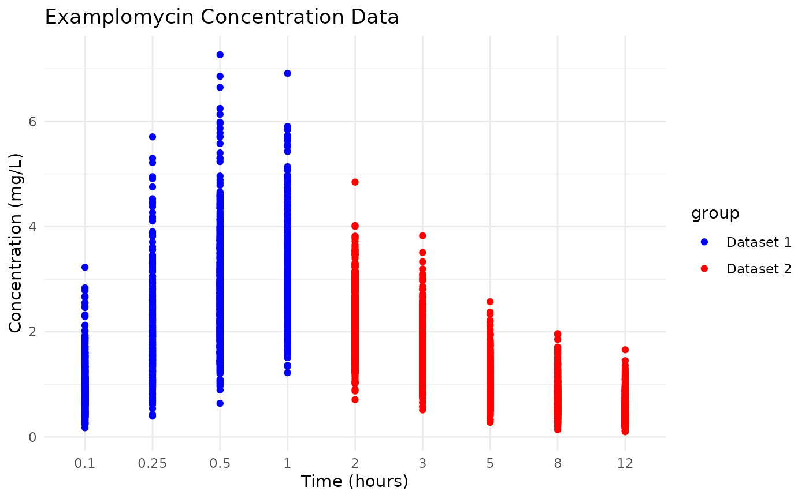
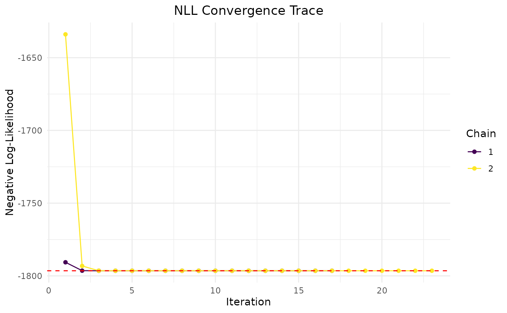
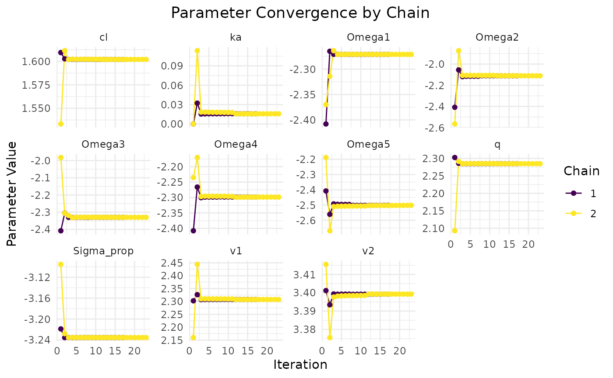
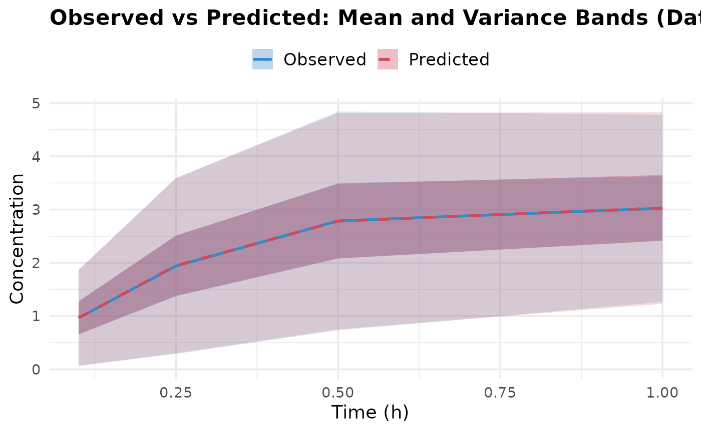
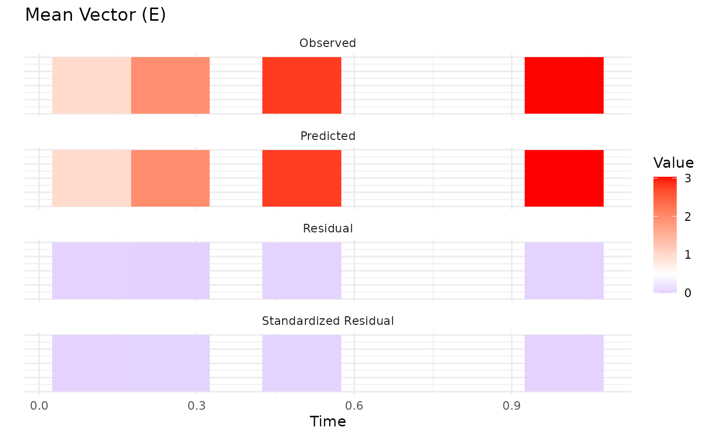
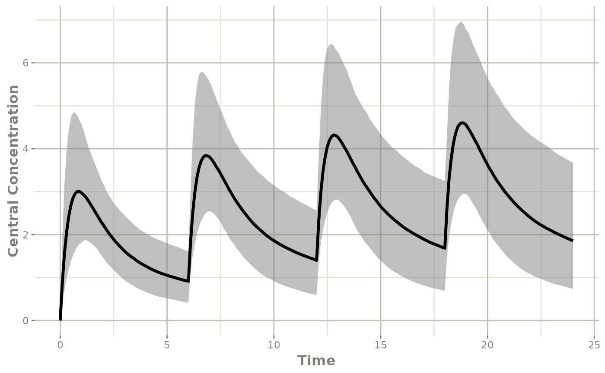
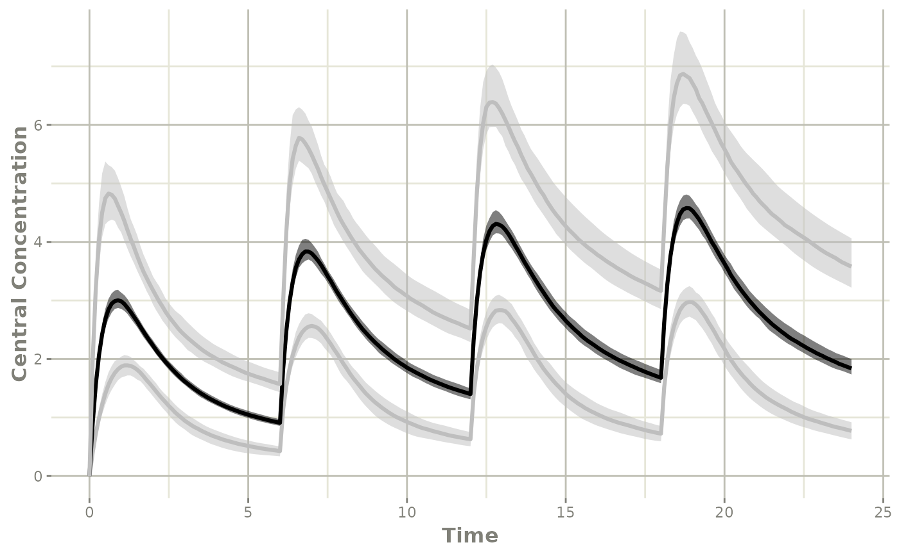

Introduction to Aggregate Data Modeling with admr
This vignette provides an introduction to using multiple datasets
with the admr package in R. The admr package
is designed for aggregate data modeling, particularly in
pharmacokinetics. It allows users to fit complex models to aggregate
data, which can be derived from individual-level observations, published
models, or summary statistics.
Understanding the Data Format
The admr package works with two types of data
formats:
- Raw Data: Individual-level observations in a wide or long format
- Aggregate Data: Summary statistics (mean and covariance) computed from raw data
Let’s look at the examplomycin dataset, which we’ll use throughout this vignette:
## ID TIME DV AMT EVID CMT
## 1 460 0.00 0.000 100 101 1
## 2 460 0.10 0.752 0 0 2
## 3 460 0.25 1.932 0 0 2
## 4 460 0.50 3.694 0 0 2
## 5 460 1.00 3.479 0 0 2
## 6 460 2.00 4.003 0 0 2## Number of subjects: 500## Number of time points: 10## Time points: 0, 0.1, 0.25, 0.5, 1, 2, 3, 5, 8, 12Data Preparation
Converting Raw Data to Aggregate Format
The first step is to convert your raw data into aggregate format. Here’s how to do it:
# Convert to wide format
examplomycin_wide <- examplomycin %>%
filter(EVID != 101) %>% # Remove dosing events
dplyr::select(ID, TIME, DV) %>% # Select relevant columns
pivot_wider(names_from = TIME, values_from = DV) %>% # Convert to wide format
dplyr::select(-c(1)) # Remove ID column
# Create aggregated data and filter timepoints 1 to 4
examplomycin_aggregated1 <- examplomycin_wide %>%
dplyr::select(c(1:4)) %>%
meancov()
examplomycin_aggregated2 <- examplomycin_wide %>%
dplyr::select(c(5:9)) %>%
meancov()
# View the structure of aggregated data
str(examplomycin_aggregated1)## List of 2
## $ E: Named num [1:4] 0.966 1.939 2.788 3.025
## ..- attr(*, "names")= chr [1:4] "0.1" "0.25" "0.5" "1"
## $ V: num [1:4, 1:4] 0.21 0.308 0.349 0.203 0.308 ...
## ..- attr(*, "dimnames")=List of 2
## .. ..$ : chr [1:4] "0.1" "0.25" "0.5" "1"
## .. ..$ : chr [1:4] "0.1" "0.25" "0.5" "1"
str(examplomycin_aggregated2)## List of 2
## $ E: Named num [1:5] 2.258 1.651 1.063 0.751 0.512
## ..- attr(*, "names")= chr [1:5] "2" "3" "5" "8" ...
## $ V: num [1:5, 1:5] 0.3447 0.1203 0.0764 0.064 0.0494 ...
## ..- attr(*, "dimnames")=List of 2
## .. ..$ : chr [1:5] "2" "3" "5" "8" ...
## .. ..$ : chr [1:5] "2" "3" "5" "8" ...Visualizing the Data
Before fitting the model, it’s helpful to visualize the data:
# Give different colours to 1-4 and 5-9
examplomycin <- admr::examplomycin %>%
filter(EVID != 101) %>% # Remove dosing events
mutate(TIME = factor(TIME, levels = c(0.1, 0.25, 0.5, 1, 2, 3, 5, 8, 12))) %>%
mutate(group = ifelse(TIME %in% c(0.1, 0.25, 0.5, 1), "Dataset 1", "Dataset 2"))
# Plot the data
ggplot(examplomycin, aes(x = TIME, y = DV, color = group)) +
geom_point() +
labs(
title = "Examplomycin Concentration Data",
x = "Time (hours)",
y = "Concentration (mg/L)"
) +
theme_minimal() +
scale_color_manual(values = c("Dataset 1" = "blue", "Dataset 2" = "red"))
Model Specification
Defining the Pharmacokinetic Model
We’ll use a two-compartment model with first-order absorption. We use a solved model approach for simplicity. The model parameters include:
Creating the Prediction Function
The prediction function is crucial for the admr package.
It: - Constructs the event table for dosing and sampling - Solves the
RxODE model - Returns predicted concentrations in the required
format
rxode2::rxSetSilentErr(1)## [1] TRUE
predder <- function(time, theta_i, dose = 100) {
n_individuals <- nrow(theta_i)
if (is.null(n_individuals)) {
n_individuals <- 1
}
# Create event table
ev <- eventTable(amount.units="mg", time.units="hours")
ev$add.dosing(dose = dose, nbr.doses = 1, start.time = 0)
ev$add.sampling(time)
# Solve model
out <- rxSolve(rxModel, params = theta_i, events = ev, cores = 0)
# Format output
cp_matrix <- matrix(out$cp, nrow = n_individuals, ncol = length(time),
byrow = TRUE)
return(cp_matrix)
}Model Fitting
Setting Up Model Options
The genopts function creates an options object that
controls the model fitting process:
opts1 <- genopts(
time = c(.1, .25, .5, 1), # Observation times
p = list(
beta = c(cl = 5, v1 = 10, v2 = 30, q = 10, ka = 1), # Population parameters
Omega = matrix(c(0.09, 0, 0, 0, 0,
0, 0.09, 0, 0, 0,
0, 0, 0.09, 0, 0,
0, 0, 0, 0.09, 0,
0, 0, 0, 0, 0.09), nrow = 5, ncol = 5), # Random effects
Sigma_prop = 0.04 # Proportional error
),
nsim = 10000, # Number of Monte Carlo samples
n = 500, # Number of individuals
fo_appr = FALSE, # Disable first-order approximation
omega_expansion = 1, # Omega expansion factor
f = predder # Prediction function
)
opts2 <- genopts(
time = c(2, 3, 5, 8, 12), # Observation times
p = list(
beta = c(cl = 5, v1 = 10, v2 = 30, q = 10, ka = 1), # Population parameters
Omega = matrix(c(0.09, 0, 0, 0, 0,
0, 0.09, 0, 0, 0,
0, 0, 0.09, 0, 0,
0, 0, 0, 0.09, 0,
0, 0, 0, 0, 0.09), nrow = 5, ncol = 5), # Random effects
Sigma_prop = 0.04 # Proportional error
),
nsim = 10000, # Number of Monte Carlo samples
n = 500, # Number of individuals
fo_appr = FALSE, # Disable first-order approximation
omega_expansion = 1, # Omega expansion factor
f = predder # Prediction function
)Fitting the Model
The fitIRMC function fits the model using the IRMC
algorithm:
opts <- list(opts1,opts2)
examplomycin_aggregated <- list(examplomycin_aggregated1, examplomycin_aggregated2)
fit.admrMC <- admr::fitMC(
opts = opts,
obs = examplomycin_aggregated,
chains = 1, # Number of parallel chains
maxiter = 2000, # Maximum iterations
single_dataframe = FALSE # Use separate data frames for each dataset
)## Iteration: 50 - NLL: -1793.555
## Iteration: 100 - NLL: -1795.991
## Iteration: 150 - NLL: -1796.268
## Iteration: 200 - NLL: -1796.38
## Iteration: 250 - NLL: -1796.395
## Iteration: 300 - NLL: -1796.402
## Iteration: 350 - NLL: -1796.408
## Iteration: 400 - NLL: -1796.426
## Iteration: 450 - NLL: -1796.435
## Iteration: 500 - NLL: -1796.446
## Iteration: 550 - NLL: -1796.457
## Iteration: 600 - NLL: -1796.462
## Iteration: 650 - NLL: -1796.476
## Iteration: 700 - NLL: -1796.481
## Iteration: 750 - NLL: -1796.485
## Iteration: 800 - NLL: -1796.487
## Iteration: 850 - NLL: -1796.488
## Iteration: 900 - NLL: -1796.488
## Iteration: 950 - NLL: -1796.489
##
## Chain 1 Complete: Final NLL = -1796.489, Time Elapsed = 245.67 seconds
##
fit.admr <- fitIRMC(
opts = opts,
obs = examplomycin_aggregated,
chains = 2, # Number of parallel chains
maxiter = 2000, # Maximum iterations
single_dataframe = FALSE # Use separate data frames for each dataset
)## Chain 1:
## Iter | NLL and Parameters (11 values)
## --------------------------------------------------------------------------------
## 1: -1790.659 1.609 2.303 3.401 2.303 0.000 -2.408 -2.408 -2.408 -2.408 -2.408 -3.219
##
## ### Wide Search Phase ###
## 2: -1796.420 1.603 2.327 3.393 2.286 0.032 -2.265 -2.055 -2.305 -2.266 -2.561 -3.235
## 3: -1796.486 1.602 2.307 3.399 2.285 0.015 -2.271 -2.119 -2.330 -2.301 -2.493 -3.235
## 4: -1796.486 1.602 2.307 3.399 2.285 0.016 -2.271 -2.115 -2.331 -2.299 -2.496 -3.235
## 5: -1796.486 1.602 2.308 3.399 2.285 0.016 -2.271 -2.115 -2.330 -2.299 -2.496 -3.235
## 6: -1796.486 1.602 2.308 3.399 2.285 0.016 -2.271 -2.115 -2.330 -2.299 -2.496 -3.235
## 7: -1796.486 1.602 2.308 3.399 2.285 0.016 -2.271 -2.115 -2.330 -2.299 -2.496 -3.235
## Phase Wide Search Phase converged at iteration 7.
##
## ### Focussed Search Phase ###
## 8: -1796.485 1.602 2.308 3.399 2.285 0.016 -2.271 -2.111 -2.330 -2.298 -2.502 -3.235
## 9: -1796.485 1.602 2.308 3.399 2.285 0.016 -2.271 -2.111 -2.330 -2.298 -2.502 -3.235
## Phase Focussed Search Phase converged at iteration 9.
##
## ### Fine-Tuning Phase ###
## 10: -1796.485 1.602 2.308 3.399 2.285 0.016 -2.271 -2.110 -2.330 -2.298 -2.502 -3.235
## 11: -1796.485 1.602 2.308 3.399 2.285 0.016 -2.271 -2.111 -2.330 -2.298 -2.502 -3.235
## 12: -1796.485 1.602 2.308 3.399 2.285 0.016 -2.271 -2.111 -2.330 -2.298 -2.502 -3.235
## 13: -1796.485 1.602 2.308 3.399 2.285 0.016 -2.271 -2.111 -2.330 -2.298 -2.502 -3.235
## 14: -1796.485 1.602 2.308 3.399 2.285 0.016 -2.271 -2.111 -2.330 -2.298 -2.502 -3.235
## Phase Fine-Tuning Phase converged at iteration 14.
##
## ### Precision Phase ###
## 15: -1796.485 1.602 2.308 3.399 2.285 0.016 -2.271 -2.111 -2.330 -2.298 -2.502 -3.235
## 16: -1796.485 1.602 2.308 3.399 2.285 0.016 -2.271 -2.111 -2.330 -2.299 -2.502 -3.235
## 17: -1796.485 1.602 2.308 3.399 2.285 0.016 -2.271 -2.111 -2.330 -2.299 -2.502 -3.235
## Phase Precision Phase converged at iteration 17.
##
## Chain 1 Complete: Final NLL = -1796.486, Time Elapsed = 32.81 seconds
##
## Phase Wide Search Phase converged at iteration 11.
## Phase Focussed Search Phase converged at iteration 16.
## Phase Fine-Tuning Phase converged at iteration 21.
## Phase Precision Phase converged at iteration 23.
##
## Chain 2 Complete: Final NLL = -1796.485, Time Elapsed = 35.68 seconds
## Model Diagnostics
Basic Diagnostics
The print method provides a summary of the model
fit:
print(fit.admr)## -- FitIRMC Summary --
##
## -- Objective Function and Information Criteria --
## Log-likelihood: -1796.4864
## AIC: 3603.97
## BIC: 3729.69
## Condition#(Cov): 168.65
## Condition#(Cor): 276.77
##
## -- Timing Information --
## Best Chain: 32.8061 seconds
## All Chains: 68.4859 seconds
## Covariance: 44.7554 seconds
## Elapsed: 113.24 seconds
##
## -- Population Parameters --
## # A tibble: 6 × 6
## Parameter Est. SE `%RSE` `Back-transformed(95%CI)` `BSV(CV%)`
## <chr> <dbl> <dbl> <dbl> <chr> <dbl>
## 1 cl 1.60 0.0155 0.968 4.96 (4.82, 5.12) 32.1
## 2 v1 2.31 0.0954 4.13 10.04 (8.33, 12.11) 34.7
## 3 v2 3.40 0.0440 1.30 29.94 (27.47, 32.64) 31.2
## 4 q 2.28 0.0206 0.901 9.82 (9.43, 10.23) 31.7
## 5 ka 0.0154 0.0906 589. 1.02 (0.85, 1.21) 28.8
## 6 Residual Error 0.0393 NA NA 0.0393 NA
##
## -- Iteration Diagnostics --
## Iter | NLL and Parameters
## --------------------------------------------------------------------------------
## 1: -1790.659 1.609 2.303 3.401 2.303 0.000 -2.408 -2.408 -2.408 -2.408 -2.408 -3.219
## 2: -1796.420 1.603 2.327 3.393 2.286 0.032 -2.265 -2.055 -2.305 -2.266 -2.561 -3.235
## 3: -1796.486 1.602 2.307 3.399 2.285 0.015 -2.271 -2.119 -2.330 -2.301 -2.493 -3.235
## 4: -1796.486 1.602 2.307 3.399 2.285 0.016 -2.271 -2.115 -2.331 -2.299 -2.496 -3.235
## 5: -1796.486 1.602 2.308 3.399 2.285 0.016 -2.271 -2.115 -2.330 -2.299 -2.496 -3.235
## ... (omitted iterations) ...
## 13: -1796.485 1.602 2.308 3.399 2.285 0.016 -2.271 -2.111 -2.330 -2.298 -2.502 -3.235
## 14: -1796.485 1.602 2.308 3.399 2.285 0.016 -2.271 -2.111 -2.330 -2.298 -2.502 -3.235
## 15: -1796.485 1.602 2.308 3.399 2.285 0.016 -2.271 -2.111 -2.330 -2.298 -2.502 -3.235
## 16: -1796.485 1.602 2.308 3.399 2.285 0.016 -2.271 -2.111 -2.330 -2.299 -2.502 -3.235
## 17: -1796.485 1.602 2.308 3.399 2.285 0.016 -2.271 -2.111 -2.330 -2.299 -2.502 -3.235Convergence Assessment
The plot method visualizes the convergence of the model
fit:
plot(fit.admr)
Parameter Estimates
Let’s examine the parameter estimates and their uncertainty:
# Extract parameter estimates
params <- fit.admr$transformed_params
cat("Final parameter estimates:\n")## Final parameter estimates:
print(params)## $beta
## cl v1 v2 q ka
## 4.963740 10.044711 29.944589 9.822392 1.015503
##
## $Omega
## [,1] [,2] [,3] [,4] [,5]
## [1,] 0.1032227 0.000000 0.00000000 0.0000000 0.00000000
## [2,] 0.0000000 0.120197 0.00000000 0.0000000 0.00000000
## [3,] 0.0000000 0.000000 0.09731057 0.0000000 0.00000000
## [4,] 0.0000000 0.000000 0.00000000 0.1002007 0.00000000
## [5,] 0.0000000 0.000000 0.00000000 0.0000000 0.08267857
##
## $Sigma_prop
## [1] 0.03934429
# Extract covariance matrix
cov_matrix <- fit.admr$covariance_matrix
cat("\nParameter covariance matrix:\n")##
## Parameter covariance matrix:
print(cov_matrix)## [,1] [,2] [,3] [,4] [,5]
## [1,] 2.407086e-04 0.0005472139 -0.0004088538 5.507829e-05 0.0005311163
## [2,] 5.472139e-04 0.0090961439 -0.0034145732 5.829371e-04 0.0085269715
## [3,] -4.088538e-04 -0.0034145732 0.0019383336 -2.938023e-04 -0.0032926077
## [4,] 5.507829e-05 0.0005829371 -0.0002938023 4.238503e-04 0.0006348469
## [5,] 5.311163e-04 0.0085269715 -0.0032926077 6.348469e-04 0.0082093004Advanced Features
Creating a dosing plot
To visualize the dosing regimen and predicted concentrations, you can
create a dosing plot. Here’s how to do it using the
randtoolbox package for pseudo-random sampling:
## Loading required package: rngWELL## This is randtoolbox. For an overview, type 'help("randtoolbox")'.##
## Attaching package: 'randtoolbox'## The following object is masked from 'package:mnorm':
##
## halton
# Create a dosing plot
n_subjects <- 2000 # Number of subjects
time_points <- seq(0, 24, by = 0.1) # Dense time points for smooth curves
beta <- fit.admr$transformed_params$beta # Extract population parameters
omega <- fit.admr$transformed_params$Omega # Extract covariance matrix
# Create parameter matrix for all subjects
z <- qnorm(sobol(n = n_subjects, dim = 5))
L <- omega
mv <- z %*% chol(L)
theta_i <- matrix(nrow = n_subjects, ncol = 5)
for(i in 1:n_subjects) {
theta_i[i,] <- c(
beta["cl"] * exp(mv[i,1]),
beta["v1"] * exp(mv[i,2]),
beta["v2"] * exp(mv[i,3]),
beta["q"] * exp(mv[i,4]),
beta["ka"] * exp(mv[i,5])
)
}
ev <- eventTable(amount.units="mg", time.units="hours")
ev$add.dosing(dose = 100, nbr.doses = 4, dosing.interval = 6)
ev$add.sampling(time_points)
sim <- rxSolve(rxModel, params = theta_i, events = ev, cores = 0, nSub = 1)
confint(sim, "cp", level=0.95) %>%
plot(ylab="Central Concentration")## ! in order to put confidence bands around the intervals, you need at least 2500 simulations## summarizing data...done
Or using the rxode2 package:
rxModel2 <- function(){
ini({
cl <- params$beta["cl"] # Clearance
v1 <- params$beta["v1"] # Volume of central compartment
v2 <- params$beta["v2"] # Volume of peripheral compartment
q <- params$beta["q"] # Inter-compartmental clearance
ka <- params$beta["ka"] # Absorption rate constant
eta_cl ~ params$Omega[1,1]
eta_v1 ~ params$Omega[2,2]
eta_v2 ~ params$Omega[3,3]
eta_q ~ params$Omega[4,4]
eta_ka ~ params$Omega[5,5]
})
model({
cl <- cl * exp(eta_cl)
v1 <- v1 * exp(eta_v1)
v2 <- v2 * exp(eta_v2)
q <- q * exp(eta_q)
ka <- ka * exp(eta_ka)
cp = linCmt(cl, v1, v2, q, ka)
})
}
rxModel2 <- rxode2(rxModel2)## ℹ parameter labels from comments are typically ignored in non-interactive mode## ℹ Need to run with the source intact to parse comments
rxModel2 <- rxModel2$simulationModel## using C compiler: ‘gcc (Ubuntu 13.3.0-6ubuntu2~24.04) 13.3.0’
sim2 <- rxSolve(rxModel2, events = ev, cores = 0, nSub = 2000)
sim3 <- rxSolve(rxModel2, events = ev, cores = 0, nSub = 20000)
confint(sim2, "cp", level=0.95) %>%
plot(ylab="Central Concentration")## ! in order to put confidence bands around the intervals, you need at least 2500 simulations## summarizing data...done## summarizing data...done## Warning: `aes_string()` was deprecated in ggplot2 3.0.0.
## ℹ Please use tidy evaluation idioms with `aes()`.
## ℹ See also `vignette("ggplot2-in-packages")` for more information.
## ℹ The deprecated feature was likely used in the rxode2 package.
## Please report the issue at <https://github.com/nlmixr2/rxode2/issues/>.
## This warning is displayed once every 8 hours.
## Call `lifecycle::last_lifecycle_warnings()` to see where this warning was
## generated.
Best Practices
-
Data Preparation:
- Always check your data for missing values and outliers
- Ensure time points are consistent across subjects
- Consider the impact of dosing events on your analysis
-
Model Specification:
- Start with a simple model and gradually add complexity
- Use meaningful initial values for parameters
- Consider parameter transformations for better estimation
-
Model Fitting:
- Use multiple chains to improve optimization
- Monitor convergence carefully
- Check parameter estimates for biological plausibility
-
Diagnostics:
- Always examine convergence plots
- Validate model predictions against observed data